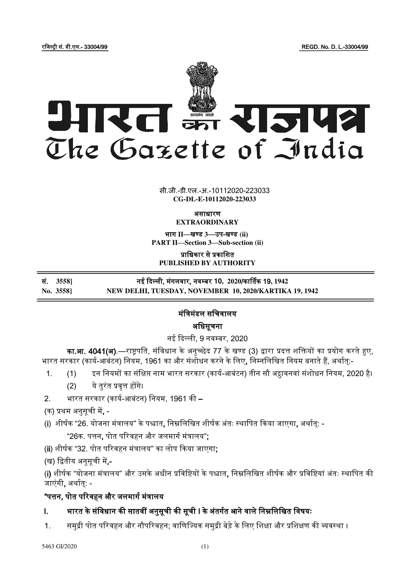
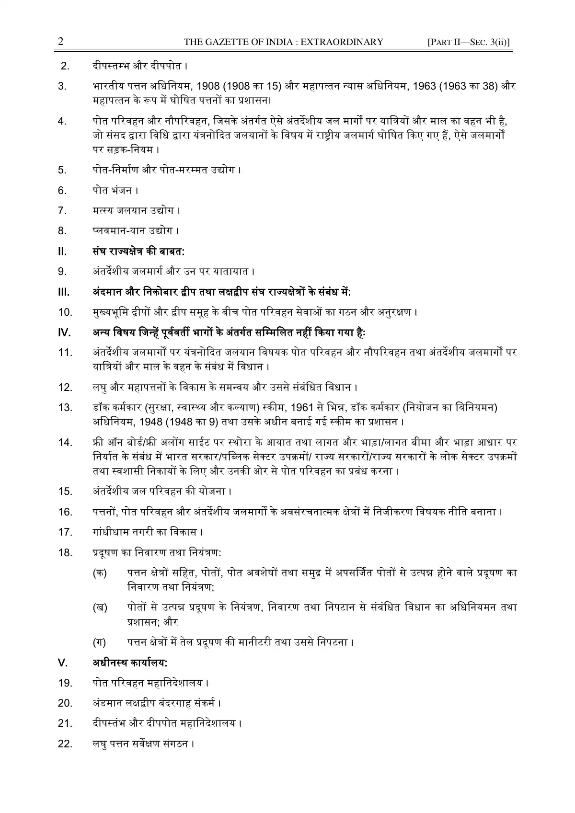
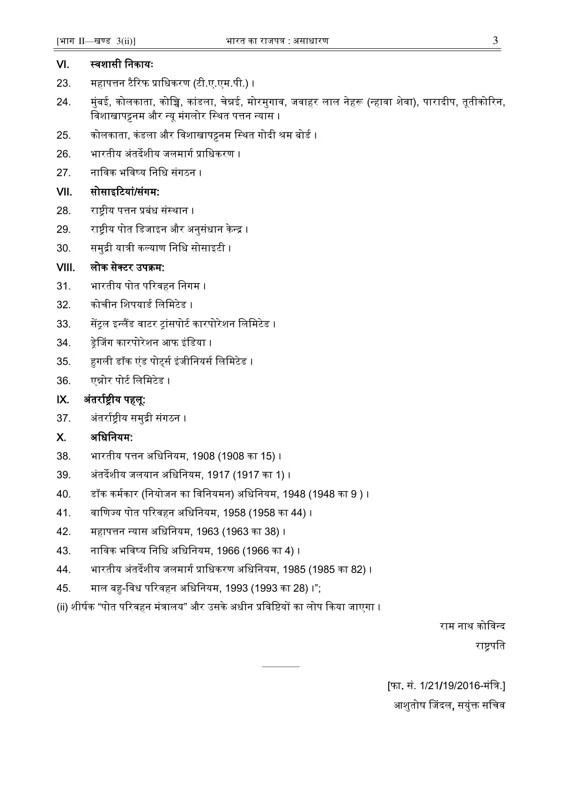
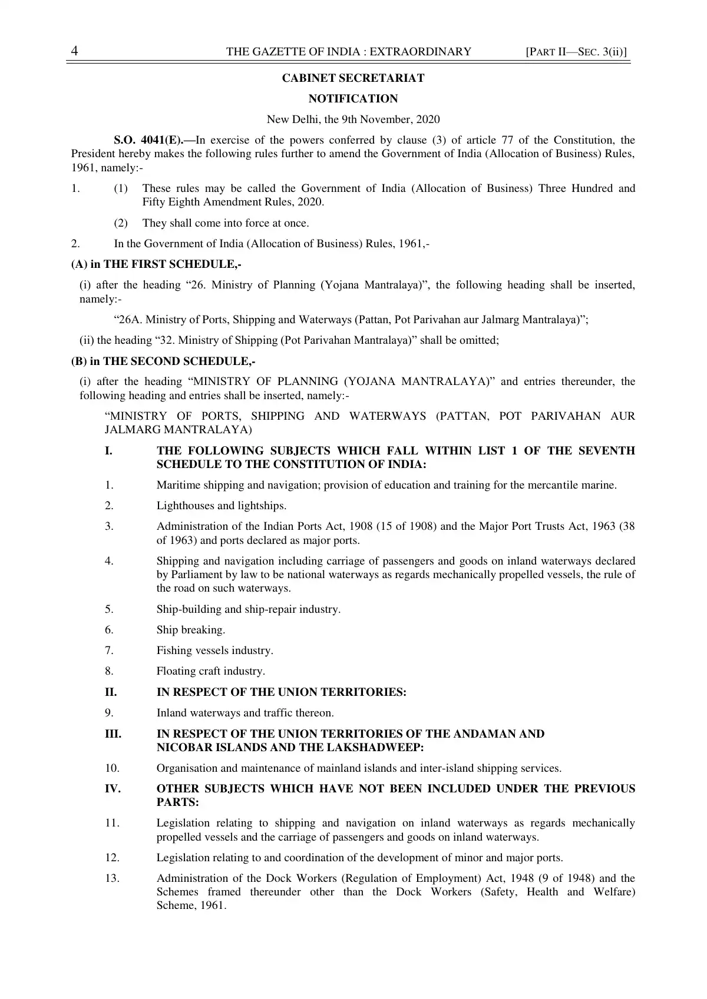
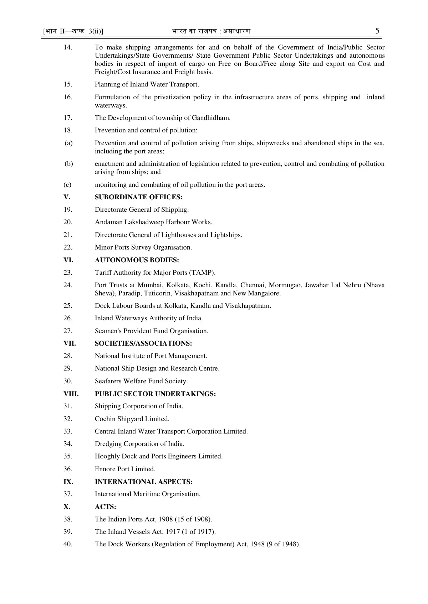
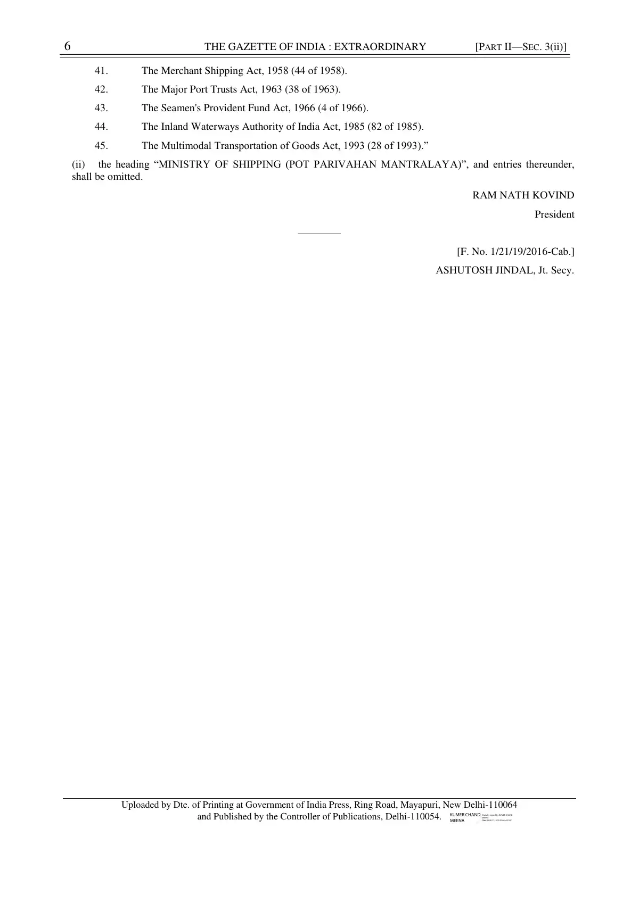

Amendment #358 (S.O. 4041(E), 2020)
4 changes: 2 to the First Schedule, 2 to the Second Schedule. 4 applied
What it did to the ministries
- renamedMinistry of Shipping is renamed Ministry of Ports, Shipping and Waterways change 1, 2 · histories: Ports & Shipping
The order, page by page
Page 1 of 6

Page 2 of 6

Page 3 of 6

Page 4 of 6

123after Schedule 1 › Ministry of Planning
- 26A. Ministry of Ports, Shipping and Waterways
applied at schedule 1 › ministry 26A in the Rules after #358
Schedule 1 › Ministry of Shipping
applied at schedule 1 › ministry 32 in the Rules after #358
after Schedule 2 › MINISTRY OF PLANNING
- MINISTRY OF PORTS, SHIPPING AND WATERWAYS
- I. THE FOLLOWING SUBJECTS WHICH FALL WITHIN LIST 1 OF THE SEVENTH SCHEDULE TO THE CONSTITUTION OF INDIA:
- 1. Maritime shipping and navigation; provision of education and training for the mercantile marine.
- 2. Lighthouses and lightships.
- 3. Administration of the Indian Ports Act, 1908 (15 of 1908) and the Major Port Trusts Act, 1963 (38 of 1963) and ports declared as major ports.
- 4. Shipping and navigation including carriage of passengers and goods on inland waterways declared by Parliament by law to be national waterways as regards mechanically propelled vessels, the rule of the road on such waterways.
and 53 more
- 5. Ship-building and ship-repair industry.
- 6. Ship breaking.
- 7. Fishing vessels industry.
- 8. Floating craft industry.
- II. IN RESPECT OF THE UNION TERRITORIES:
- 9. Inland waterways and traffic thereon.
- III. IN RESPECT OF THE UNION TERRITORIES OF THE ANDAMAN AND NICOBAR ISLANDS AND THE LAKSHADWEEP:
- 10. Organisation and maintenance of mainland islands and inter-island shipping services.
- IV. OTHER SUBJECTS WHICH HAVE NOT BEEN INCLUDED UNDER THE PREVIOUS PARTS:
- 11. Legislation relating to shipping and navigation on inland waterways as regards mechanically propelled vessels and the carriage of passengers and goods on inland waterways.
- 12. Legislation relating to and coordination of the development of minor and major ports.
- 13. Administration of the Dock Workers (Regulation of Employment) Act, 1948 (9 of 1948) and the Schemes framed thereunder other than the Dock Workers (Safety, Health and Welfare) Scheme, 1961.
- 14. To make shipping arrangements for and on behalf of the Government of India/Public Sector Undertakings/State Governments/ State Government Public Sector Undertakings and autonomous bodies in respect of import of cargo on Free on Board/Free along Site and export on Cost and Freight/Cost Insurance…
- 15. Planning of Inland Water Transport.
- 16. Formulation of the privatization policy in the infrastructure areas of ports, shipping and inland waterways.
- 17. The Development of township of Gandhidham.
- 18. Prevention and control of pollution:
- a. Prevention and control of pollution arising from ships, shipwrecks and abandoned ships in the sea including the port areas
- b. enactment and administration of legislation related to prevention, control and combating of pollution arising from ships; and
- c. monitoring and combating of oil pollution in the port areas.
- V. SUBORDINATE OFFICES:
- 19. Directorate General of Shipping.
- 20. Andaman Lakshadweep Harbour Works.
- 21. Directorate General of Lighthouses and Lightships.
- 22. Minor Ports Survey Organisation.
- VI. AUTONOMOUS BODIES:
- 23. Tariff Authority for Major Ports (TAMP).
- 24. Port Trusts at Mumbai, Kolkata, Kochi, Kandla, Chennai, Mormugao, Jawahar Lal Nehru (Nhava Sheva), Paradip, Tuticorin, Visakhapatnam and New Mangalore.
- 25. Dock Labour Boards at Kolkata, Kandla and Visakhapatnam.
- 26. Inland Waterways Authority of India.
- 27. Seamen's Provident Fund Organisation.
- VII. SOCIETIES/ASSOCIATIONS:
- 28. National Institute of Port Management.
- 29. National Ship Design and Research Centre.
- 30. Seafarers Welfare Fund Society.
- VIII. PUBLIC SECTOR UNDERTAKINGS:
- 31. Shipping Corporation of India.
- 32. Cochin Shipyard Limited.
- 33. Central Inland Water Transport Corporation Limited.
- 34. Dredging Corporation of India.
- 35. Hooghly Dock and Ports Engineers Limited.
- 36. Ennore Port Limited.
- IX. INTERNATIONAL ASPECTS:
- 37. International Maritime Organisation.
- X. ACTS:
- 38. The Indian Ports Act, 1908 (15 of 1908).
- 39. The Inland Vessels Act, 1917 (1 of 1917).
- 40. The Dock Workers (Regulation of Employment) Act, 1948 (9 of 1948).
- 41. The Merchant Shipping Act, 1958 (44 of 1958).
- 42. The Major Port Trusts Act, 1963 (38 of 1963).
- 43. The Seamen's Provident Fund Act, 1966 (4 of 1966).
- 44. The Inland Waterways Authority of India Act, 1985 (82 of 1985).
- 45. The Multimodal Transportation of Goods Act, 1993 (28 of 1993).
applied at schedule 2 › ministry MINISTRY OF PORTS, SHIPPING AND WATERWAYS in the Rules after #358
read page break
Page 5 of 6

Page 6 of 6

4Schedule 2 › MINISTRY OF SHIPPING
applied at schedule 2 › ministry in the Rules after #358
How this document was read
From the Government of India (Allocation of Business) Rules, 1961 and their amendments, as published by the Cabinet Secretariat (cabsec.gov.in), read by orgpedia. The readings of the older scanned gazettes have known gaps.